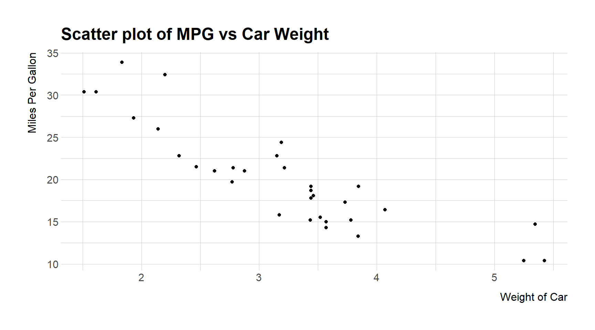
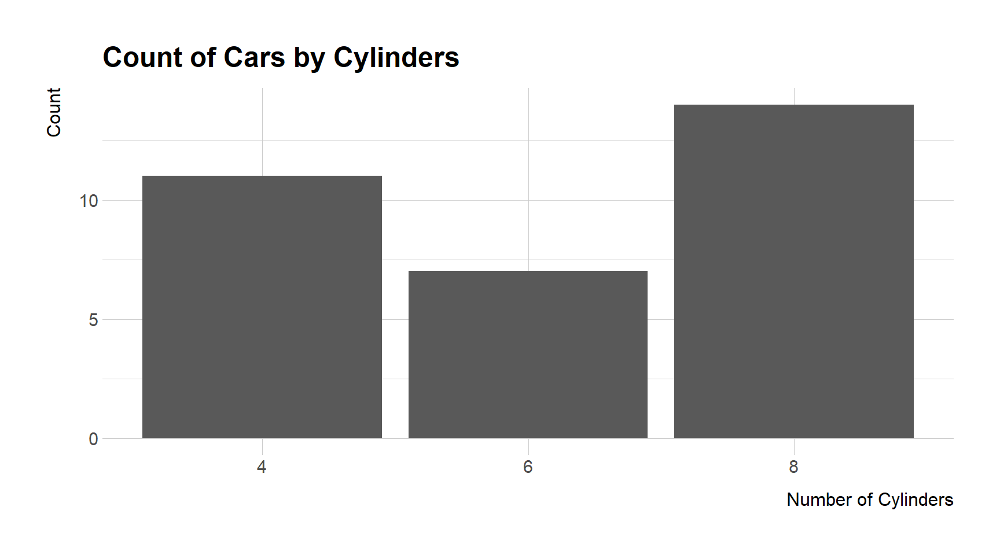
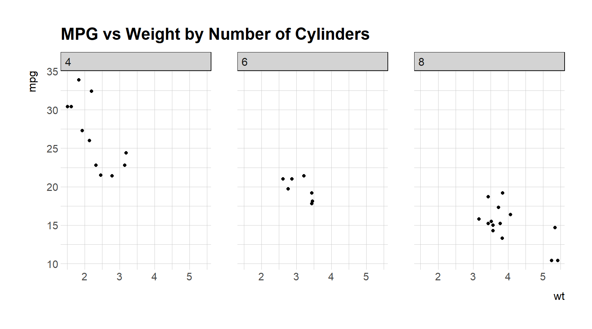

Code
my_variable <- 10DANL 399: Introduction to Data Analytics
“Tidy datasets are all alike, but every messy dataset is messy in its own way.” — Hadley Wickham
R is a powerful language and environment for statistical computing and graphics. It is widely used among statisticians and data analysts for data analysis and developing statistical software. Here are some basic concepts and elements of R to help you get started:
Variables in R are used to store data. You can create a variable using the assignment operator <- (option/Alt + -). For example:
my_variable <- 10This will store the value 10 in my_variable.
R has several basic data types:
2.5.2L (the L tells R it is an integer)."Hello".TRUE or FALSE).Vectors are a basic data structure in R. They contain elements of the same type. You can create a vector using the c() function:
my_vector <- c(1, 2, 3, 4, 5)Data frames are used for storing data tables in R. It is a list of vectors of equal length. For example, to create a simple data frame:
df <- data.frame(
Name = c("Alice", "Bob"),
Age = c(25, 30)
)Functions are used to carry out specific tasks in R. For example, sum() is a function that adds numbers together:
sum(1, 2, 3) # Returns 6[1] 6R has a vast collection of packages for various statistical tasks. You can install a package using install.packages("packageName") and load it using library(packageName).
# install.packages("tidyverse")
library(tidyverse)To get help on a specific function or topic, use the help() function or the shorthand ?, like ?sum on R Console.
ggplot2 is a data visualization package for the R programming language, based on the grammar of graphics. The grammar of graphics is a framework for creating graphics in a structured way, focusing on the components of a graphic such as data, aesthetic mappings, geometric objects, statistical transformations, scales, coordinate systems, and facets. ggplot2 makes it easy to create complex plots from data in a dataframe.
Let’s go through some examples to illustrate how ggplot can be used to create different types of visualizations.
Creating a scatter plot to explore the relationship between two variables, say mpg (miles per gallon) and wt (weight of the car) from the mtcars dataset.
ggplot(mtcars, aes(x = wt, y = mpg)) +
geom_point() +
labs(x = "Weight of Car", y = "Miles Per Gallon",
title = "Scatter plot of MPG vs Car Weight")
This code block creates a scatter plot where car weight is on the x-axis and miles per gallon on the y-axis. Each point represents a car.
Creating a bar chart to show the count of cars by the number of cylinders.
ggplot(mtcars, aes(x = factor(cyl))) +
geom_bar() +
labs(x = "Number of Cylinders", y = "Count",
title = "Count of Cars by Cylinders")
This plots a bar chart where each bar represents the count of cars with a certain number of cylinders.
Plotting a line graph, assuming we have a time series data.frame economics that is part of ggplot2 package.
ggplot(economics, aes(x = date, y = unemploy)) +
geom_line() +
labs(x = "Year", y = "Number of Unemployed Persons",
title = "Unemployment over Time") 
This code plots the unemployment numbers over time, with time on the x-axis and the number of unemployed persons on the y-axis.
Creating a faceted plot to compare scatter plots of mpg vs wt across different numbers of cylinders.
ggplot(mtcars, aes(x = wt, y = mpg)) +
geom_point() +
facet_wrap(~cyl) +
labs(title = "MPG vs Weight by Number of Cylinders")
This splits the data into subsets based on the number of cylinders and creates a scatter plot for each subset.
ggplot2 provides a powerful and flexible system for making a wide variety of plots. By understanding the grammar of graphics upon which it is based, you can build up complex visualizations from simple components, allowing for a deep and intuitive exploration of data.